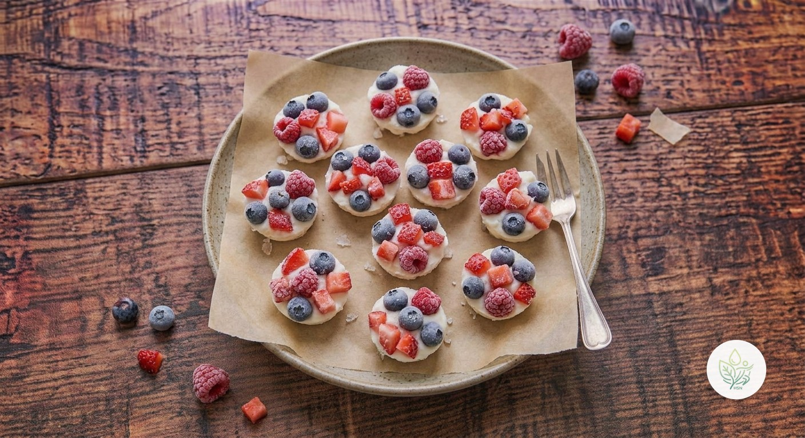

Racimos de Fruta Congelada con Yogur
AEl snack viral del verano que también funciona en otoño: pequeños racimos de yogur natural con frutos rojos, congelados. Sin azúcar añadido (la miel es opcional), unos 10 g de proteína por ración y solo unas 100 kcal.
Se basa en yogur natural sin azúcar (10 g de proteína por 100 g y casi nada de grasa) y en frutos rojos, ricos en fibra y antocianinas. Así, casi todo el azúcar de la receta viene de la propia fruta y el yogur; la miel es opcional y, sin ella, es todavía más ligera. Es una alternativa sencilla al helado o a los snacks dulces industriales.
Ingredientes (toca el nombre para ver su ficha)
- 🥣 Yogur Natural sin Azúcar 400 g
- 🫐 Arándanos 100 g
- 🍓 Fresas 100 g
- 🍒 Frambuesas 50 g
- 🍯 Miel Opcional 15 g
Elaboración
- Forra una bandeja o un plato que quepa en el congelador con papel de horno.
- Si usas miel, mézclala con el yogur.
- Reparte unas 12 cucharadas de yogur sobre el papel, dejando espacio entre ellas.
- Coloca encima los arándanos, trozos de fresa y las frambuesas, presionando ligeramente para que se sujeten.
- Congela como mínimo 2 horas. Guarda los racimos en un recipiente hermético en el congelador hasta 1 mes y tómalos directamente del congelador.
Información nutricional (receta completa, 4 raciones)
De las grasas, 1.3 g son saturadas · de los carbohidratos, 43.8 g son azúcares · sodio: 147.1 mg
Información nutricional (por ración)
De las grasas, 0.3 g son saturadas · de los carbohidratos, 10.9 g son azúcares · sodio: 36.8 mg
Preguntas frecuentes
¿Cuántas calorías tiene la receta de Racimos de Fruta Congelada con Yogur?
Toda la receta de Racimos de Fruta Congelada con Yogur tiene 396.6 kcal repartidas en 4 raciones, es decir, unas 99.2 kcal por ración.
¿Puedo usar yogur vegetal?
Sí, con un yogur de soja espeso y sin azúcar; quedarán algo menos firmes que con yogur natural o griego.
¿Cuánto duran en el congelador?
Hasta un mes en un recipiente hermético; sepáralos con papel de horno para que no se peguen entre sí.
¿Puedo usar otras frutas?
Sí: mango, kiwi o plátano en trozos funcionan bien. Evita las muy acuosas, como la sandía, porque al congelarse quedan duras.